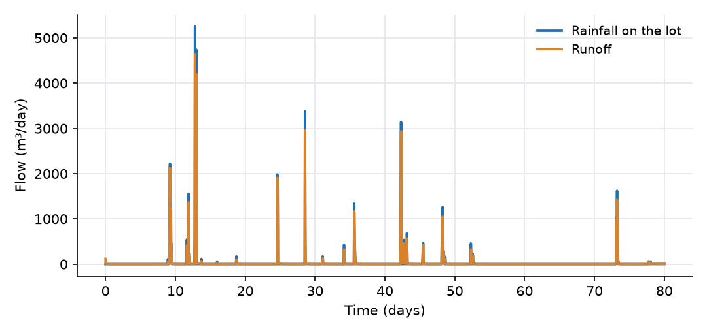
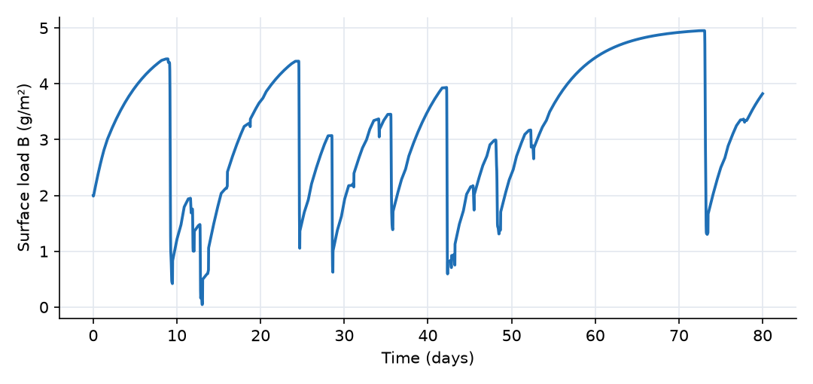
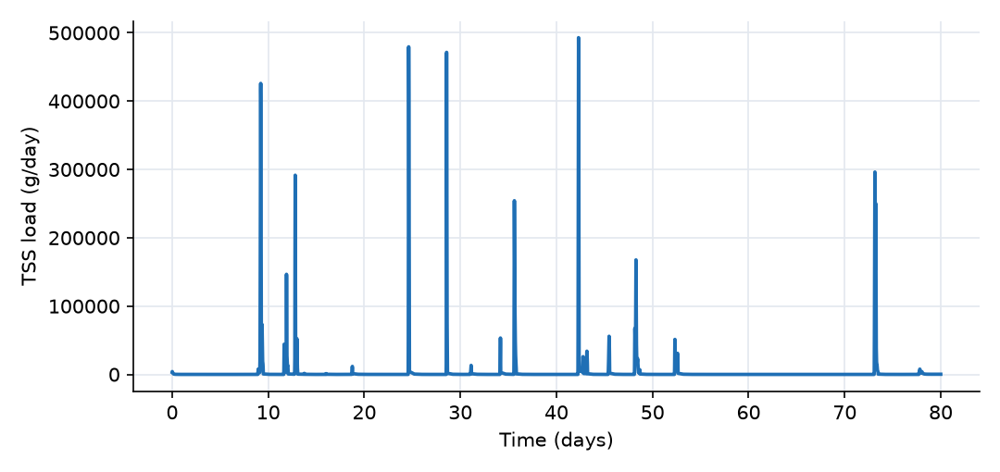
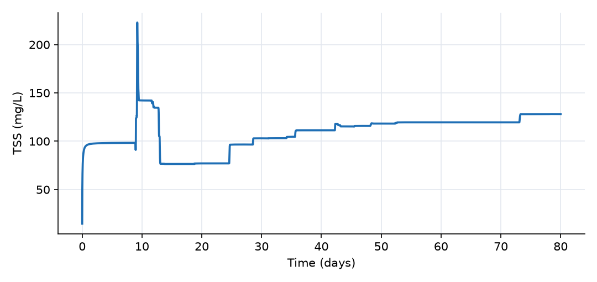

What this model represents
A paved parking lot of 1 ha drains to a single outlet. Between storms, solids (tire and brake wear, dust, litter fragments, atmospheric deposition) accumulate on the pavement. During a storm, the thin sheet of runoff picks the solids up and carries them off the lot. This build-up / wash-off concept is the standard way to model pollutant loads from impervious urban surfaces, and it underlies the water-quality routines of SWMM and similar models.
The example uses 80 days of real hourly summer rainfall, so it contains short and long dry periods and storms of different sizes. That makes it possible to see the two regimes that control urban stormwater loads:
- Supply-limited events, in which the storm is large enough to strip most of the available solids, so the load depends on how much has accumulated since the last storm.
- Transport-limited events, in which the storm is too small or too gentle to remove much of what is there.
How it works
Runoff. The lot is a Catchment block. Its water storage S (m³) gains rainfall and loses runoff:
dS/dt = P·A − Q, h = S/A
where P is the rainfall intensity from rainfall.txt (m/day), A = 10,000 m² is the lot area and h is the average water depth (m). The Runoff link (Catchment_link) computes the outflow with a kinematic-wave (Manning) relation:
Q = 86400 · (W/n) · S₀^0.5 · (h − d_s)₊^(5/3) (m³/day)
with width W = 100 m, Manning's n = 0.015, slope S₀ = 0.01 and depression storage d_s = 0. In the most intense hour of the record (about 23 mm/h), the water depth on the lot peaks at about 3.5 mm.
Build-up. Surface_Solids is an Immobile_Constituent: it is stored per unit surface area (B, g/m²) and is never carried by the flow. The Buildup source (type Build up (Saturation)) adds mass at the rate
A · k_b · (B_max − B) (g/day)
so that, per unit area, dB/dt = k_b·(B_max − B). With k_b = 0.2 1/day and B_max = 5 g/m², the surface approaches saturation with a time constant of 5 days: a clean surface reaches 63% of B_max in 5 days and 95% in 15 days. The plugin labels build_up_rate in g/day/m², but because it multiplies the difference B_max − B, its actual unit is 1/day.
Wash-off. The Washoff reaction is a surface_release reaction. Its rate is evaluated per unit area,
r = (k_w · B) · α · h^β (g/m²/day)
where k_w·B is the concentration-dependence expression, and α = 1 and β = 2 are the release coefficient and depth exponent set on the lot. The reaction removes this mass from Surface_Solids (stoichiometric coefficient −1) and adds it to TSS in the water (+1), multiplied by the lot area. Wash-off is therefore first order in the surface load, with a rate constant that depends on the runoff depth:
k(h) = k_w · h²
With k_w = 5×10⁶ 1/(m²·day), k is about 5 1/day at h = 1 mm and about 60 1/day (2.5 1/h) at h = 3.5 mm. Light rain barely disturbs the surface; intense rain strips it within an hour or two.
Transport. TSS leaves the lot with the runoff at the lot concentration C (upwind advection, Q·C). The mass balances on the lot are
d(A·B)/dt = A·k_b·(B_max − B) − A·k_w·B·h² d(S·C)/dt = A·k_w·B·h² − Q·C
Collection tank. All runoff ends in Collection_Tank, a Catch basin block (1,000 m² base area) with no outlet. It is not a physical structure. It integrates the outflow, so the results show cumulative runoff volume (m³), cumulative TSS load (g) and their ratio, the flow-weighted mean concentration (mg/L). The wash-off reaction is also defined in the tank, but the tank holds no surface solids, so it has no effect there.
What to look for in the results
- Volume check. The rainfall file contains 215.6 mm. The tank collects 2,160 m³, which equals 215.6 mm on 1 ha plus the 5 m³ of initial water. Runoff is essentially complete because the lot has no losses.
- Build-up between storms. The surface load recovers toward 5 g/m² at a decreasing rate. It reaches 4.95 g/m² during the 20-day dry spell between days 52 and 73.
- Supply-limited storms. The storm on days 8 to 9 (30 mm) washes off 43 kg and lowers B from 4.5 to 1.0 g/m². The larger storm on days 12 to 13 (about 55 mm of runoff) carries only 17.5 kg, at an event mean concentration of 32 mg/L, because the two earlier storms had already depleted the surface.
- Antecedent dry period. The 17 mm storm on day 73, after 20 dry days, produces 38 kg and the highest event mean concentration of the larger storms (227 mg/L).
- Small storms. Events of 1 to 4 mm hardly change B. The water depth stays below 1 mm, so k(h) stays below about 5 1/day, and the runoff lasts only a few hours.
- First flush. In the larger storms, the runoff TSS concentration peaks within the first hours (250 to 310 mg/L) and then falls while the flow is still high, because the surface load is being exhausted.
- Period totals. Over 80 days, about 277 kg of solids leave the lot, at a flow-weighted mean concentration of 128 mg/L. This is within the range commonly reported for parking-lot runoff.
Assumptions and limitations
- The lot is fully impervious, with no depression storage, infiltration or evaporation. Every millimetre of rain becomes runoff.
- Build-up depends only on the current surface load. It ignores street sweeping, wind removal and seasonal changes. The build-up parameters (k_b, B_max) and the wash-off coefficient k_w are illustrative values; calibrate them against measured event loads before using the model for a real site.
- Wash-off is driven by the water depth on the lot (h²). Other formulations use rainfall intensity or runoff rate per unit area. Raindrop detachment is not represented separately.
- TSS is treated as a single constituent that moves with the water. There is no settling or re-deposition on the lot and no particle-size distribution.
- The lot is one well-mixed storage, so travel-time differences across the lot are not resolved.
- After a storm, the water remaining on the lot drains slowly and keeps the concentration it had at the end of the event. The TSS concentration in this vanishing film has no practical meaning, which is why the plots show load rates and cumulative values.
- The lot starts with 0.5 mm of water (5 m³ of clean water), so the runoff calculation does not start exactly at rest. This has no visible effect on the results.
Model diagram
Hover a block or link to see its name and type. Arrows show the positive flow direction.
Components
Click a component to see every property set in the model file, with units and meaning.
Blocks 2
Storage compartments: each holds water (and dissolved or particulate mass) and has a state that evolves in time.
Parking_LotCatchmentA 10,000 m² impervious lot (100 m wide, 100 m flow length, slope 0.01, Manning's n 0.015) with no depression storage and a runoff coefficient of 1. It holds both the sheet-flow water and the surface solids store. It starts with 0.5 mm of water left over from earlier rain.
Catchment: Catchment
| Property | Value | Unit | Meaning |
|---|---|---|---|
| Catchment area | 10000 | m2 | Total horizontal surface area of the catchment. Used to compute initial storage and flow-related parameters. |
| The width of the catchment | 100 | m | The average width of the catchment perpendicular to the dominant flow direction |
| Catchment slope in the direction of flow | 0.01 | The average slope of the catchment along the dominant flow direction | |
| Manning's Roughness Coefficient | 0.015 | The Manning's roughness coefficient representing surface resistance to flow. Typical values vary by land cover type. | |
| Runoff coefficient | 1 | This is the fraction of rain that converts to runoff in case infiltration is not explicitly modeled | |
| Depression storage | 0 | m | The depth of water that is retained in surface depressions and does not contribute to surface runoff. |
| Average water depth | 0.0005 | m | The initial depth of the standing water before the simulation start time. Most of the times, this value is zero |
| Mean elevation of the catchment | 0 | m | The elevation of the centroid of the catchment based on the model datum. |
| Loss coefficient | 0 | 1/day | A coefficient representing losses (e.g., infiltration or leakage) as a first-order rate constant. Used in loss expression. |
| Precipitation | Rain | m^3/day | A precipitation source object must be selected. |
| Surface_Solids: Concentration per unit surface area | 2 | g/m2 | Initial surface concentration of the immobile constituent per unit area. Used to compute initial mass on surfaces. |
| Surface_Solids: External source | Buildup | Optional reference to another source object providing external loading of the constituent. | |
| TSS: Concentration | 0 | g/m3 | Computed as mass/(Storage+0.00001) |
| Washoff: release_coefficient | 1 | ||
| Washoff: exponent_of_depth | 2 |
Collection_TankCatch basin · Sewer_systemAn accounting store that receives all runoff and has no outlet. Its storage is the cumulative runoff volume, its TSS mass is the cumulative wash-off load, and its TSS concentration is the running flow-weighted mean concentration of everything that has left the lot.
Catch basin: Catch Basin
| Property | Value | Unit | Meaning |
|---|---|---|---|
| Bottom Elevation | -1 | m | Bottom Elevation (user input required). |
| Initial Storage | 0 | m3 | |
| Base Area | 1000 | m2 | Base Area (user input required). |
| Surface_Solids: Concentration per unit surface area | 0 | g/m2 | Initial surface concentration of the immobile constituent per unit area. Used to compute initial mass on surfaces. |
| TSS: Concentration | 0 | g/m3 | Computed as mass/(Storage+0.00001) |
Links 1
Connections that move water (and the mass it carries) between blocks.
RunoffCatchment_linkKinematic-wave sheet flow from the lot to the tank. Flow is always from the lot to the tank. It carries TSS at the lot's concentration.
Catchment_link: Link from a catchment
Sources 2
External inputs or sinks applied to blocks: rainfall, evaporation, loads, exchange with the atmosphere.
RainPrecipitationHourly rainfall recorded at BWI airport, Maryland, 1 July to 18 September 2010 (rainfall.txt), applied over the lot area.
rainfall.txt), applied over the lot area.Precipitation: Precipitation
| Property | Value | Unit | Meaning |
|---|---|---|---|
| Precipitation Cumulative | rainfall.txt | m |
BuildupBuild up (Saturation) · buildup_washoffExponential (saturating) build-up of surface solids, with a rate constant of 0.2 1/day toward a maximum load of 5 g/m².
Build up (Saturation): Buildup exponential model
| Property | Value | Unit | Meaning |
|---|---|---|---|
| Build up rate (mass/time/area) | 0.2 | g/day/m2 | |
| Saturation Concentration Level | 5 | g/m2 |
Constituents 2
Substances or particles carried by the water.
Surface_SolidsImmobile_Constituent · buildup_washoffSolids stored on the pavement (street dirt), in g per m² of surface. They do not move with the water; they only grow by build-up and shrink by wash-off. Starts at 2 g/m².
Immobile_Constituent: Immobile chemical constituent
| Property | Value | Unit | Meaning |
|---|---|---|---|
| Stoichiometric Constant | 0 | Factor used to convert between constituent forms in reactions (e.g., from nitrogen to nitrate). | |
| Concentration per unit surface area | 0 | g/m2 | Initial surface concentration of the immobile constituent per unit area. Used to compute initial mass on surfaces. |
TSSConstituentTotal suspended solids in the runoff water (g/m³, equal to mg/L). Produced only by wash-off.
Constituent: Chemical constituent
| Property | Value | Unit | Meaning |
|---|---|---|---|
| Concentration | 0 | g/m3 | Computed as mass/(Storage+0.00001) |
| Constant Inflow concentration | 0 | g/m^3 | |
| Diffusion Coefficient | 0 | m^2/s | |
| Dispersivity | 0 | m | |
| Stoichiometric Constant | 0 |
Reaction parameters 1
Named coefficients used in reaction rate expressions.
k_wReactionParameterWash-off rate coefficient, 5×10⁶ 1/(m²·day). Multiplied by the square of the runoff depth, it gives the fraction of the surface load removed per day.
ReactionParameter: Reaction Parameter
| Property | Value | Unit | Meaning |
|---|---|---|---|
| Value | 5e+06 | ||
| Arrhenius temperature correction factor | 1 | ||
| Reference Temperature | 20 |
Reactions 1
Transformations among constituents, each with a stoichiometry and a rate expression.
Washoffsurface_release · buildup_washoffRelease of surface solids into the water at a rate k_w·B·h² per unit area (B is the surface load, h the water depth on the lot).
surface_release: Release from surface
| Constituent | Stoichiometric coefficient |
|---|---|
| Surface_Solids | -1 |
| TSS | 1 |
| Property | Value | Unit | Meaning |
|---|---|---|---|
| Concentration dependence function | (k_w*Surface_Solids) | This expression indicates the dependence of the release rate to the concentration of attached constituent per surface area | |
| Release coefficient | 1 | Indicates the coefficient in the power function relating the release rate and water depth (alpha*d^beta) | |
| Depth exponent | 2 | Indicates the exponent in the power function relating the release rate and water depth (alpha*d^beta) |
Input files
rainfall.txt | Rainfall in the three-column precipitation format: interval start (day), interval end (day), rainfall depth in the interval (m). Hourly intervals; day 0 is 1 July 2010; dry hours are omitted. Source: NOAA hourly precipitation record at Baltimore/Washington International Airport (BWI), Maryland, USA (US public domain, 0.01 in = 0.254 mm resolution). |
Simulation settings
| Start time | 0 |
| End time | 80 |
| Initial time step | 0.01 |
| Write interval (steps) | 1 |
Results
Produced by running the downloaded model unchanged.



